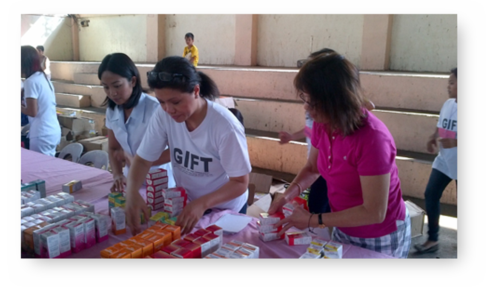
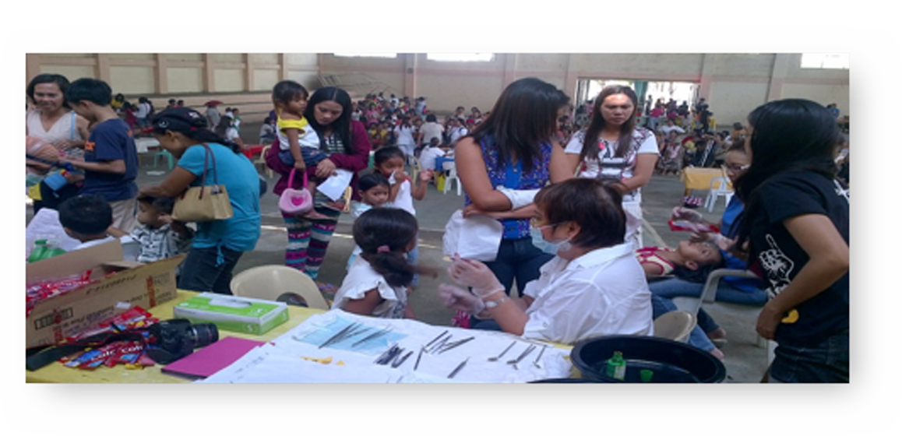

GIFT to the Philippines “Responding to Super Typhoon Haiyan”
December 11, 2015 By Lyra Torres
When missionaries return from their fields of service, it is always great to know what God is doing in other parts of the world. Earlier this year, a 10 person medical mission team from non-profit organization Gateway International Fellowship of Toronto (GIFT) travelled to the Philippines and delivered medical and dental aid to the victims devastated by the Super Typhoon Haiyan or known as Typhoon Yolanda in the Philippines.
The mission was from January 26 to February 6, 2014 with the team led by Mr. Rick Falco from Toronto. Mr. Falco was a former community leader and was the first Filipino Canadian elected School Board Trustee in the Greater Toronto Area in the early 1990’s.
In the team’s first two days, they visited the municipality of Bingawan in the province of Iloilo. Bingawan, is the last municipality of Iloilo bordering the province of Capiz and is one of the remote areas where there has been no medical help since the typhoon hit the province. They had set-up their mission aid first in the Town’s Hall and then the next day at Bingawan Baptist Church. With the assistance of Mayor Matt Palabrica and of the local pastor of the town, they were able to announce that the medical mission team is coming to help. And during these first two days, they served close to 1000 patients in the town of Bingawan.
Another municipality the GIFT missionaries visited is Tapaz in the province of Capiz and on their third day, they went to one of the 58 barangays which is Candelaria. This time the mission team’s venue had set-up in the gymnasium of Candelaria National High School which is partly destroyed by typhoon Yolanda. “We are so blest that four more medical doctors arrived coming from Manila, Batangas, Bacolod and the town doctor,” commented Rick. The team of 20 members stayed at this location for two days and were hosted by the Exmundo, Falco and Palomar families. On the fourth day, they moved to barangay Camburanan still within Tapaz, where it has been the first time that the town has received any medical and dental aid from a non-profit organization according to the barangay captain and also the school principal Lony Falco. Here they had set-up tents and used classrooms for dental and medical work as well as a ‘botika’ or pharmacy. The team cannot use the school gym because it was totally destroyed to the ground. These barangays are located remote from the town proper that some people from the City are afraid to go because it is well known for the New People’s Army (N.P.A.) insurgent activities.
In each of those venues, there was a process or system that the mission team followed to get organized and it starts with registration. They created a line for seniors, disabled patients and pregnant women; this was first priority in Station 1. Another line up is for general and dental patients. A nursing station was also put in place where nurses would take the patient’s blood pressure and sugar level. In the waiting area & counselling station, patients have the opportunity to talk to pastors while the word of God is being shared. During this whole process, different patients are serviced for their respective medical and dental needs. Free medicine is also prescribed by the doctors and dentists on location and can be picked up at the ‘botika’ area that was also set-up there.
When I asked what most encouraged him in this mission work, Mr. Rick Falco smiled shyly and replied: “It’s the sense of serving people in need. I want to help in some way or another (by volunteering) to serve the people of God.” He also mentioned that he is not a doctor, a dentist or a nurse but he can do something else. He understands that it is vital to coordinate with the local doctors and mayors of the town in order to deliver the services and source out the medicine to the needy, especially with very little budget. And he’s aware that his role is to be able to help assist with that.
A medical mission like this doesn’t come without any challenges. There were a lot of patients that needed help but they only had two dentists and two doctors. Then came four more doctors, five more dentists and a lot of city and local nurses at the time when they needed it most! Mr. Falco expressed that being a servant God has shown him that miracles do happen and especially when the going gets tough, “the Holy Spirit through the works of God has done beyond my expectations.” He also mentioned some of the associations that greatly helped them with this endeavor: Central Philippine University Alumni Association of Greater Toronto Area, led by Ms. Josie Dayao, president and she was one of the nurses who volunteered in the front line. The Capizeno Association of Ontario, led by Rey Mestidio, past president. Rey personally appealed to the community in Greater Toronto area that their town was devastated by typhoon Yolanda and needed help and GIFT answered that cry for help. Mr. Rey Mestidio and his family were instrumental in helping the team connect with Mayor Tito Mayo at a very short notice.
“In all of the small towns and remote barangays that the GIFT team members have served, we can truly say that there are a lot of good people in our homeland with generous heart. Our host families are genuinely concerned of our safety, they are courteous and hospitable. We are very pleased to witness the whole community working together. This is the true ‘Bayanihan’ spirit where each community member helps one another regardless of faith and political color. I am blest that I have great team members who are willing and able to serve patients in the thousands. Without them, we don’t have a team” added Mr. Falco.
Josephine Boumatta, the Board Chair of GIFT, would like to express their sincere thanks to all team members of the medical and dental team, with their unselfish dedication and efforts we were able to served thousands of patients. The team members from Canada are Mary Davis, JJ Kreene Demigillo, Agnes Abayari, Belle Tumbokon, Josie Dayao, Rick Falco and from USA, Lou Mendoza and Grace Snyder. “The GIFT board members owed you all a debt of gratitude,” exclaimed Mrs. Boumatta.

This powerful tropical storm that hit the Philippines' eastern seaboard has left thousands of Filipinos dead. And even though the work to restore the country has only just begun the most important thing that Mr. Falco wants us to know during his time there — donate. "Donations are needed. A lot of people are badly affected. When you go there, it is reality. Regardless of what you do, you can donate not only money but also your valuable time, talent and skills. Just open your heart and serve the people in need", he says. He also noted that it's best to donate to smaller registered organizations; your donation has more mileage. They direct accountability to donors and less red tapes.
I can never thank Gateway International Fellowship of Toronto and the 2014 Medical and Dental Missionaries for what they have done to help our beloved countrymen. Through their works, they have shared the love of Jesus Christ with thousands of Filipino people; it is truly a Gift of Hope.